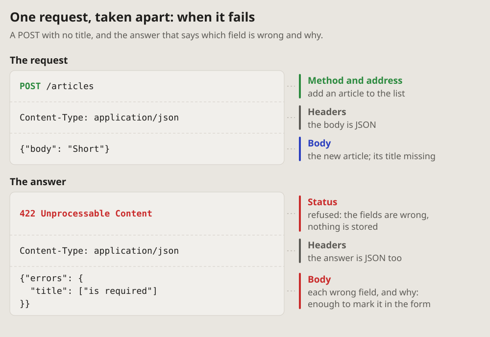
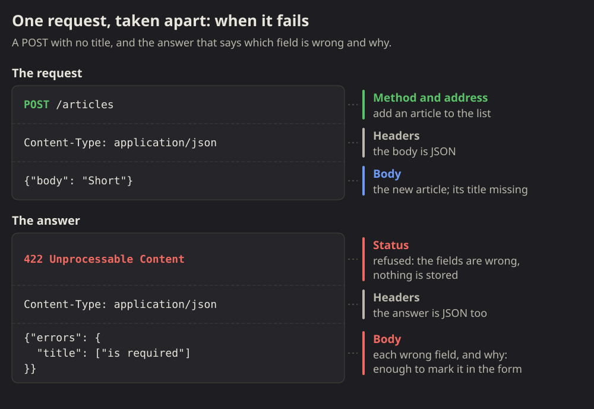

01Compact: one resource, every request a row
A whole resource on one picture: each request a row, in the order they are sent, with what it sends, what it gets back and what the server keeps after it. Which request reads, adds, changes or removes, and what a repeat does, reads down a column.
Fits when
- A resource and its requests: list, read, add, replace, change, remove; the reader learns the API, or checks what it does.
- The difference between requests matters: PUT beside PATCH, POST beside PUT, what a repeat does.
- The state after each request says more than its answer: what is added, replaced, gone.
Not when
- One request in detail, its headers and body, an error's answer: the expanded form.
- The order of calls between parts, a server, a database, a queue: a sequence diagram.
- Many resources at once: a compact picture each, or a matrix of addresses by methods.
How it is drawn
- A row per request, in the order they are sent, on a card of its own: the method as a badge, the address in a monospace font.
- The method's colour says what it does to the data: blue reads, green adds, orange changes, red removes. A legend under the picture says so.
- Five columns: the request; what it sends (a body in a code box, else "nothing"); what it gets back (the status in green, a line on the body); what is stored after it (each record a chip, the one touched in the method's colour, a removed one faded in a dashed red box); sent twice ("same", or what changes more in orange).
- One small example of data runs through every row (articles #1 and #2, then #3 added, changed and removed), so each row's change shows.
- What fails goes in a red line under the rows: a record that is not there, fields that are wrong, with their statuses.
- Around it: a title with the resource, one line of how to read it.
# Compact: one resource, every request a row
A whole resource on one picture: each request a row, in the order they are
sent, with what it sends, what it gets back and what the server keeps after
it. Which request reads, adds, changes or removes, and what a repeat does,
reads down a column.

## Fits when
- **A resource and its requests:** list, read, add, replace, change,
remove; the reader learns the API, or checks what it does.
- **The difference between requests matters:** PUT beside PATCH, POST
beside PUT, what a repeat does.
- **The state after each request** says more than its answer: what is added,
replaced, gone.
## Not when
- **One request in detail,** its headers and body, an error's answer: the
[expanded form](https://github.com/vbarbarosh/rules/blob/main/apis/expanded.md).
- **The order of calls between parts,** a server, a database, a queue: a
[sequence diagram](https://vbarbarosh.github.io/rules/docs/diagrams.html#sequence).
- **Many resources at once:** a compact picture each, or a
[matrix](https://vbarbarosh.github.io/rules/docs/diagrams.html#matrix) of
addresses by methods.
## How it is drawn
1. **A row per request,** in the order they are sent, on a card of its own:
the method as a badge, the address in a monospace font.
2. **The method's colour says what it does to the data:** blue reads, green
adds, orange changes, red removes. A legend under the picture says so.
3. **Five columns:** the request; what it sends (a body in a code box, else
"nothing"); what it gets back (the status in green, a line on the body);
what is stored after it (each record a chip, the one touched in the
method's colour, a removed one faded in a dashed red box); sent twice
("same", or what changes more in orange).
4. **One small example of data** runs through every row (articles #1 and
#2, then #3 added, changed and removed), so each row's change shows.
5. **What fails** goes in a red line under the rows: a record that is not
there, fields that are wrong, with their statuses.
6. **Around it:** a title with the resource, one line of how to read it.
02Expanded: one request taken apart
One request and its answer, every part named: the method and address, the headers, the body, the status. Each part sits in a code box as it is sent, its name and what it is for beside it, so a reader learns what a request is made of and what to look at in one.
Fits when
- One request matters in detail: the one a bug is in, the one a client has to build, the one the docs explain first.
- The answer has to be read: what the status says, what the body holds, how an error names the field that is wrong.
- A newcomer learns the shape of a request once, to read the compact form after it.
Not when
- The whole resource, all its requests side by side: the compact form.
- Parts talking to each other, in time order: a sequence diagram.
- The difference is one field: the request and the answer as text, the field marked, say it better.
How it is drawn
- Two code boxes, the request on top and the answer under it, each in its parts as they are sent: the first line, the headers, the body. A dashed line between the parts.
- The name of each part beside it, on a coloured bar: the method's colour on the method and address, green on a status that worked and red on one that failed, blue on a body, grey on headers. Under the name, a few words on what it is for in this request.
- Real values, short: a token cut with "…", a body with only the fields that matter.
- A failure is drawn the same way, the status and the body that names what is wrong in red, so the reader sees what a client gets back.
- Around it: a title with what the request does, one line of what it shows.


# Expanded: one request taken apart
One request and its answer, every part named: the method and address, the
headers, the body, the status. Each part sits in a code box as it is sent,
its name and what it is for beside it, so a reader learns what a request is
made of and what to look at in one.

## Fits when
- **One request matters in detail:** the one a bug is in, the one a client
has to build, the one the docs explain first.
- **The answer has to be read:** what the status says, what the body holds,
how an error names the field that is wrong.
- **A newcomer learns the shape** of a request once, to read the
[compact form](https://github.com/vbarbarosh/rules/blob/main/apis/compact.md) after it.
## Not when
- **The whole resource,** all its requests side by side: the
[compact form](https://github.com/vbarbarosh/rules/blob/main/apis/compact.md).
- **Parts talking to each other,** in time order: a
[sequence diagram](https://vbarbarosh.github.io/rules/docs/diagrams.html#sequence).
- **The difference is one field:** the request and the answer as text, the
field marked, say it better.
## How it is drawn
1. **Two code boxes,** the request on top and the answer under it, each in
its parts as they are sent: the first line, the headers, the body. A
dashed line between the parts.
2. **The name of each part beside it,** on a coloured bar: the method's
colour on the method and address, green on a status that worked and red
on one that failed, blue on a body, grey on headers. Under the name, a
few words on what it is for in this request.
3. **Real values,** short: a token cut with "…", a body with only the fields
that matter.
4. **A failure is drawn the same way,** the status and the body that names
what is wrong in red, so the reader sees what a client gets back.
5. **Around it:** a title with what the request does, one line of what it
shows.

No form matches that.